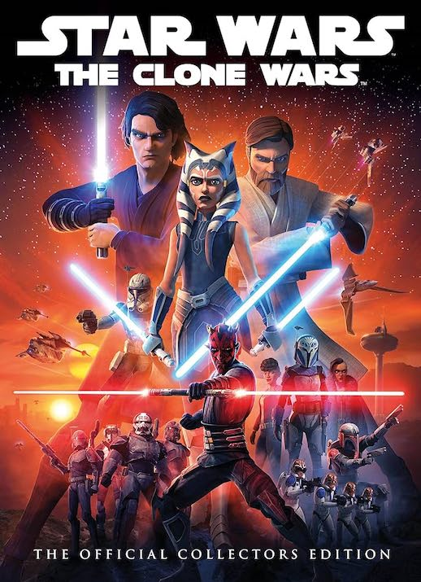

You ask me what my favorite childhood show was? It's this! I still watch it all the time, it truly never gets old, like ever. I love every single one of the characters and it truly was peak Star Wars. I remeber watching Season 7 every morning before school in 4th grade.
Favorite Character: Ahsoka Tano
I meannnnnn, how could this not be on here?! It's one of the best movies ever, plus no one thought they could pull it off! Obviously Natasha dies which is so sad, but I still love how all the Avengers came together and beat Thanos. Nothing will ever be as iconic.
Favorite Character: Natasha Romanoff
Such a good movie. I love the cast, I mean the Golden Allicance is also so iconic (Katniss, Peeta, Johana, and Finnick). And the plot is sooooo good, like the whole victors into the arena (Yes! I know it's orginally from the books, but this is really both the book and movie) is such an intersting twist
Favorite Character: IDK! Their all aweosme, so I guess all four of them
I know it just came out, but I loved it already. Normally, I can't watch a movie twice in a month, but I saw this three times in theaters and I complteley would again. The build up to the final battle between Paul and Feyd-Rautha was epic. Like Catching Fire, the cast?! All amazing once in a generation actors, and the press tour with the four mains, Florence Pugh, Timothee Chalamet, Zendaya, and Austin Butler was so funny. I think overall it's an amazing film
Favorite Character: Channi
Home